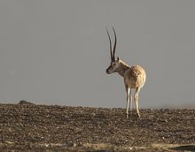

藏羚羊体形也与黄羊相似，但比黄羊大，也显得健壮。体长为117-146厘米，尾长15-20厘米，肩高75-91厘米，体重45-60千克。通体的被毛都非常丰厚细密，呈淡黄褐色，略染一些粉红色，腹部、四肢内侧为白色，雄兽的面部和四肢的前缘为黑色或黑褐色。
头部宽而长，雄兽的吻部粗壮多毛，上唇宽厚，没有眶下腺。鼻部肿胀而略微隆起，鼻腔宽阔，向两侧呈半球状鼓胀，鼻端被毛，鼻孔较大，略向下弯。每个鼻孔内还有1个小囊，其作用是为了帮助在空气稀薄的高原上进行呼吸，以利于快速奔跑。
四肢强健而匀称，蹄子侧扁而尖。尾巴较短，端部尖细。鼠鼷部有两个对称的皮囊状鼠鼷腺，非常发达，能分泌有香味的黄褐色分泌物。
雌兽没有角。雄兽有角，角形特殊，有20多个明显的横棱，细长似鞭，乌黑发亮，从头顶几乎垂直向上，仅光滑的角尖稍微有一点向内倾斜，长度一般为60厘米左右，最长的记录是72.4厘米，非常漂亮。因为两只角长得十分匀称，由侧面远远望去，却好像只有一只角，所以被称为“独角兽”或“一角兽”。